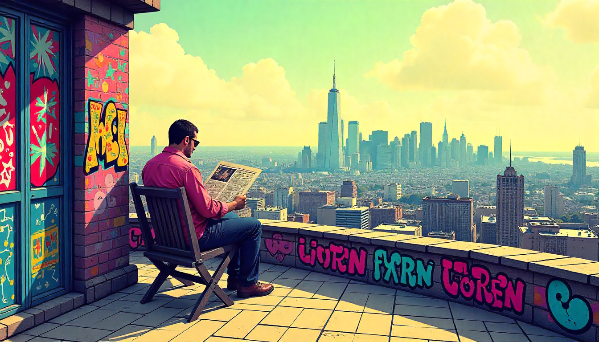

Estructura del periódico

Este recurso se ha generado a partir de IA de Freepik
A continuación señalaremos las que entendemos como partes fundamentales de un periódico para que tengáis una aproximación que os ayude a realizar vuestro proyecto.
- Portada. Título principal, foto destacada y sumarios de las noticias más importantes. Atractiva y que invite a leer.
- Actualidad/Noticias. Noticias (locales, nacionales, etc.) Responde a las 5W (Qué, Quién, Cómo, Dónde, Cuándo) en el primer párrafo (lead). Usa párrafos cortos, hechos comprobables y lenguaje objetivo. No incluyas opiniones personales.
- Opinión/Editorial. Editorial y/o Artículo de Opinión. El editorial refleja la postura oficial del periódico (normalmente sin firma). El artículo de opinión lleva la firma del autor y expresa su postura personal sobre un tema actual, usando argumentos sólidos. Se puede usar la primera persona.
- Cultura/Deportes/etc. Noticias, Crónicas, Reseñas. Sigue las pautas de las noticias o adapta el tono según el formato (por ejemplo, una reseña cultural puede ser más subjetiva).
- Visuales. Imagen comentada/Foto-noticia. Incluye fotos o ilustraciones relevantes con un pie de foto claro y conciso que explique el contexto.
- La contraportada de un periódico es la última página y suele incluir contenido de interés humano, caricaturas, humor, entrevistas o historias inspiradoras. Al ser una de las páginas más visibles, funciona como un escaparate para atraer al lector y se considera un espacio de contenido especial y de alta visibilidad.